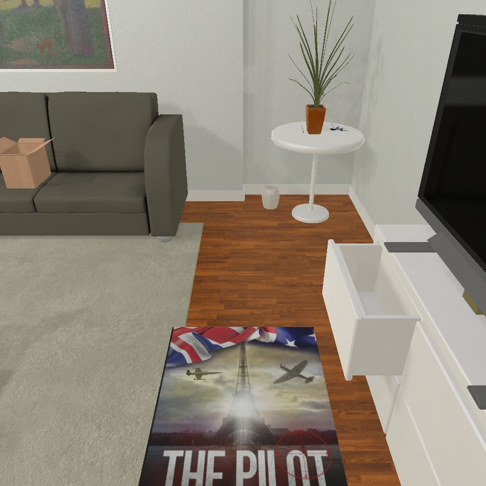

---------------------------------------------------------task: 5---------------------------------------------------------
--------------------------------------------------------------------------------------------------------------------------------------------------------------------
--------------------------------------------------------------------------------------------------------------------------------------------------------------------
Step:--------------------------------------------------------------------------7-------------------------------------------------------------------------------
----------------------------------------
VLM Prompt:
Image1:
**Instruction**
1. Analyze the provided image to identify all visible household objects, focusing on those relevant to the task description "put a book in armchair."
2. Use the analysis of the image and the task hint "The agent must find an object of the desired type, pick it up, find the correct location to place it, and put it down there." to answer the question: what is the most reasonable action in the choices for the task description "put a book in armchair"?
4. Decide and write the answer using the template: The answer is: (i): , where i is the real number. If there is no desired object in the image, search every place based on **Initial Observation** to find the object. And if no one is exactly correct, choose a similar answer.
**Initial Observation**
You are in the middle of a room. Looking quickly around you, you can see armchair (1), sofa (1), coffeetable (1), drawer (1-4), sidetable (1-3), dresser (1)
**Answer Choices**
(1): go to armchair 1
(2): go to sofa 1
(3): go to coffeetable 1
(4): go to sidetable 1
(5): go to dresser 1
(6): go to drawer 4
(7): go to sidetable 2
(8): go to sidetable 3
(9): open drawer 3
(10): close drawer 3
(11): put book 1 in/on drawer 3
(12): examine book 1
(13): examine drawer 3
**Answer**
Let's think step by step by following the instructions.
----------------------------------------
----------------------------------------
Original Response:
First, we need to identify all visible household objects in the image relevant to the task "put a book in armchair." The image shows an armchair, a sofa, a coffee table, a side table, and a drawer within a dresser.
Based on the task hint, the agent must find a book. However, there is no book visible in the image provided. Therefore, the agent needs to search every place based on the Initial Observation to find the object.
The Initial Observation mentions several potential locations where a book might be found, including an armchair, a sofa, a coffee table, sidetables, a dresser, and drawers.
Given the choices, the most reasonable action for the agent to start searching for the book would be to check locations where books are commonly placed or stored, such as a side table, dresser, or drawer. Since the image does not show a book on the visible side table or coffee table, we can assume the book might be in a less visible location such as a drawer or dresser.
The answer is: (6): go to drawer 4. If the book is not found there, the agent should continue searching the other locations mentioned in the Initial Observation.
----------------------------------------
----------------------------------------
>>> Refine Original VLM Response and Get Pure Action: go to drawer 4
----------------------------------------
-----------------------------------------------------------------
Running time: 28.029743909835815 seconds
Total Money: 1.4848
-----------------------------------------------------------------
-----------------------------------------------------------------
Text Observation:You arrive at loc 8. The drawer 4 is closed.
-----------------------------------------------------------------
UNSUCCEED